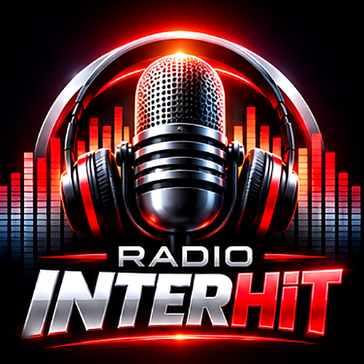

Радио Интерхит
Натиснете „Пусни“, за да слушате.
Сега звучи
Съобщение от радиото
Таймер за заспиване
Таймерът е изключен.
Известия от радиото
Получавайте съобщенията на радиото като известие, дори когато не слушате.
Покани приятел
Звукът се усилва и намалява с бутоните на телефона.